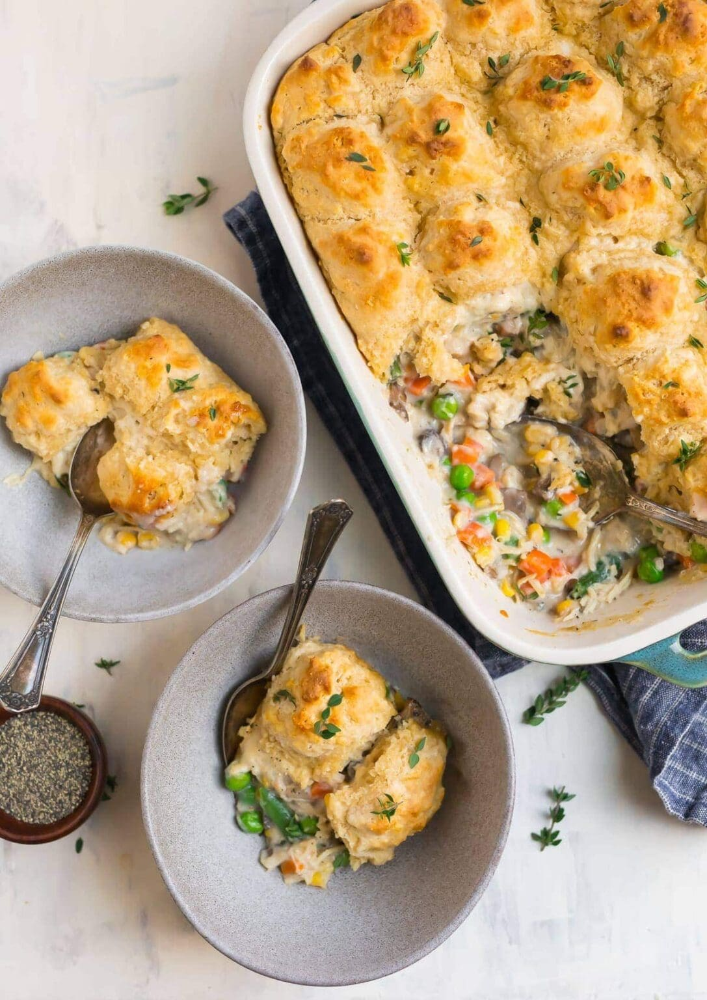

Chicken & Biscuits

Chicken & Biscuits is the ultimate creamy and comforting
casserole. It is healthy, rich, and satisfying. We will be using
simple ingredients to create exceptional flavor.
Ingredients
- Boneless chicken breasts
- Refridgerated biscuits
- Mushrooms
- Frozen vegetables mix
- Flour
- Milk
- Fresh thyme
Steps
- Saute the mushrooms. Add the flour, then the milk. Simmer to thicken.
- Add chicken, vegetables, and thyme.
- Transfer the mixture to a baking dish.
- Drop your biscuits on top.
- Bake the chicken & biscuits are 400 degrees fahrenheight for 30 minutes.
- Enjoy!